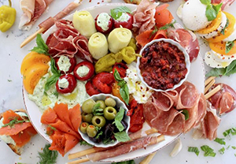

Incanto Restaurant

Beginnings
House-marinated olives 4
Winter citrus, goat cheese, pine nuts, & Marash 10
Granny Smith apple, cabbage, celery root, walnuts & mustard 11
Butter lettuce, lemon, anchovy & capers 11
Heirloom chicories, balsamic & Pecorino 10
Pickled local herring & shaved vegetables 16
Boccalone cotechino, turnips, carrots & lentil salsa verde 12
Boccalone salumi platter: Piglet 14/Sow 23/Boar 38
Pasta & Grains
Squid ink calamaretti & octopus sugo 17/11
Cavatelli, pork sausage, turnip greens, chilli & pecorino 17/11
Handkerchief pasta & rustic pork ragu 16/10
Strozzapreti, Grandma Rosalie’s pigs foot sugo & cannellini beans 16/10
Spaghettini, Sardinian cured tuna heart, egg yolk & parsley 17/11
Green garlic & black trumpet mushroom risotto 16/10
Supper & Supper for Two
Grilled octopus, clams, nduja & chickpeas 29
Braised short rib, beef tongue, oysters & horseradish gremolata 28
Pork belly, Kabocha squash & apples 24
Duck breast, Chantenay carrots, mandarins & duck liver crostino 29
Beef heart, sweetbread Rossini & arugula 27
Pork tenderloin, rack of ribs & winter slaw (for two) 60
Daily Requirements
Roasted purple carrots, honey & pistachios 5.5
Braised cabbage, guanciale & rosemary 6
Plate of Frantoio Olivestri DOP extra virgin olive oil 3
Endings
Mascarpone semifreddo, pinenuts, honeycomb & rosemary 9
Bay leaf panna cotta, candied kumquats & fresh citrus 7
Poached pear, red wine granita & fennel 7
Chocolate cake, espresso gelato & cherries 9
© 2020 Copyright Incanto Restaurant.
All rights reserved.